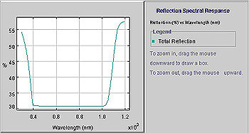
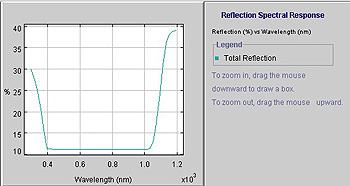
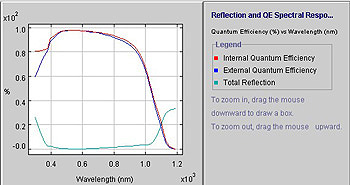

Reflection Tests
One
of the most useful tests throughout the processing sequence for solar cells
is the measurement of the surface reflection for the partly processed wafer.
Reflection is a very important issue because silicon is naturally highly reflective
with typically 33% of incident light being reflected from a flat surface. The
electric current generated by a solar cell is directly proportional to the amount
of light incident on the solar cell. The loss of 33% of the light through reflection
will therefore decrease the current generated by 33% compared to what it would
have been without the reflection.
Reflection
tests are normally conducted as a function of wavelength and silicon will vary
somewhat in the magnitude of its reflection as the wavelength varies from roughly
0.3 micron wavelength light up to the other extreme of useful wavelengths which
is typically 1.1 microns.
The
first useful point in the process for conducting a reflectance
test would be after the saw damage removal etch. At this stage, the
surface should be relatively flat and therefore provide the normal reflection
characteristics for crystalline silicon as shown in the figure below. A reflection
test at this point could, however, give some insight into surface roughness
such as may occur if excessive saw damage remains or alternatively if a nicely
roughened surface has been prepared to assist in the pyramid nucleation in the
subsequent texturing step.

Figure: Normal reflection characteristics for a flat
uncoated crystalline silicon surface
Following
the texturing (see example to the right), there should be a drastic reduction
in the surface reflection. The quality of the texturing process can be quite
accurately gauged by conducting a surface reflection test at this point in the
process. Poorly formed pyramids or else gaps between pyramids will all tend
to reduce the opportunity for incoming light to receive double bounces before
being reflected. Such regions will therefore retain reflection magnitudes in
the vicinity of 33% rather than being reduced to the vicinity of 11% as normally
achieved through a well textured surface. The extent to which the overall reflection
exceeds 11% is probably a good indicator as to the area of the wafer surface
that has been poorly textured. Below is a typical reflection curve for a textured
surface. |
 |

Figure: Reflection curve for a textured surface
In
general, the texturing process does not introduce any wavelength dependent bias
into the reflected spectrum of light. One factor, however, that can affect
this is if submicron pyramids are produced on the surface which therefore interfere
with the infra-red light that has wavelengths in the vicinity of the pyramid
dimensions. Such small pyramids become incapable of achieving the normal double
bounce phenomenon due to these interference effects. The nett result is therefore
often an increase in the amount of reflection at these longer wavelengths relative
to the rest of the spectrum and this increase should be able to be observed
in the reflection tests which give the surface reflection as a function of wavelength.
The
next useful point to conduct reflection tests is after the antireflection coating
deposition. These AR coatings have a strong spectral bias as a function of
the thickness of the AR coating layer. Identification of the wavelength at
which minimum reflection is achieved gives direct information regarding the
thickness of the AR coating layer. An example is given in the figure below
in which the reflection for a flat silicon surface is given when coated with
a 70 nanometer thick antireflection coating that has a refractive index of 2.0.
Further information on this is given in the section on AR coating formation.
The
other very useful time to conduct a reflection test is following the formation
of the front surface metal contact. The metal tends to be highly reflective
such that the increase in the surface reflection following the formation of
the top metal contact gives direct feedback as to the percentage of the top
surface being covered and therefore shaded by the metal. This shading percentage
is of course a direct loss as this percentage of light is unable to penetrate
into the silicon and therefore unable to generate electricity. This component
of reflection will also have minimal spectral dependence and will therefore
simply increase the magnitude of reflection of each wavelength by a similar
absolute amount.
Figure: Reflection (green curve) for a textured silicon surface when coated
with a 70 nanometer thick antireflection coating that has a refractive index
of 2.0. The reflection is so low at most wavelengths that the spectral bias
introduced by the AR coating is difficult to see, although a minimum is visible
at approximately 600nm wavelength. |
 |
The
use of reflection tests to help ascertain the quality of texturing is only useful
without the inclusion of an AR coating. Even a badly textured surface will
typically have its surface reflection reduced to less than 1% following the
application of an optimal AR coating. At such low values of reflection, variations
in quality of texturing are difficult to observe, which is
one of the reasons why some manufacturers choose to use an AR coating in their
process.